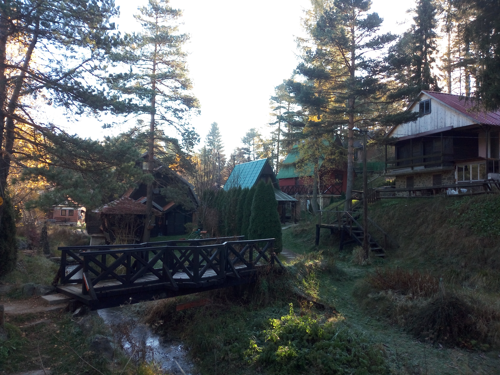

Divčibare
Serbia
Situated on the slopes of Mount Maljen in western Serbia, Divčibare is a mountain destination known for its peaceful atmosphere and beautiful natural scenery. Rolling green meadows, forested hills and wide-open views give the area a distinctive charm. During my visit, I enjoyed its quiet surroundings and the opportunity to experience a different side of Serbia, away from the pace of its larger towns and cities.
Photo Gallery
A collection of photographs and personal memories from Divčibare.
View All Photos ↗